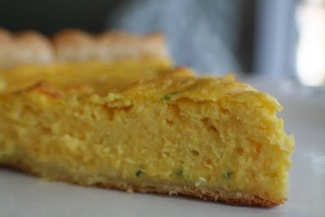
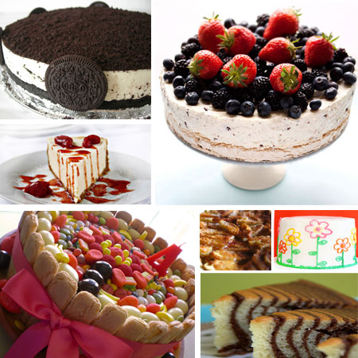

Recetas de tarta sencillas y deliciosas - De Rechupete

Recetas de rechupete Recetas de cocina caseras y fáciles
Recetas de Postres y dulces Pescado y marisco Pollo y otras carnes Arroz Pasta Ensaladas y verduras Tapas y aperitivos Sopas, guisos y legumbres Pan, masas y rebozados Patatas, salsas y guarniciones Para ocasiones especiales Bebidas, cócteles y licores Aprende a cocinar Recetas de pollo Actualidad gastronómica Recetas fáciles y baratasInicio » Recetas por tipo » Recetas de postres y dulces » Recetas de tartas
Recetas de tartas 97 recetas
Si quieres preparar una tarta y no te decides, nosotros te ayudamos. Recetas sencillas y riquísimas de tartas de todos los sabores y formas. Quedarán de Rechupete.
Cómo hacer la tarta de queso “La Viña”. La auténtica receta donostiarra
⭐ 3.8 65 min 0.7€/pers.Cómo hacer la tarta de queso más famosa de España, tarta La Viña. Receta una tarta de queso sencilla, rápida de hacer, la mejor que he probado.
queso cocina española
Recetas relacionadas
Bizcochos Cremas, coberturas y rellenos Dulces tradicionales Galletas Postres con chocolate Cupcakes, magdalenas y muffins Recetas de tartasTarta de mousse de chocolate negro con frutos secos. Postre paso a paso delicioso
⭐ 3.6 45 min 0.7€/pers.Cómo hacer una tarta mousse de chocolate negro con frutos secos, avellanas, almendras o piñones. Receta paso a paso de una tarta perfecta.
chocolate cocina francesa
Tarta de Oreo. Receta fácil y sin horno
⭐ 4 25 min 1.54€/pers.Deliciosa tarta de Oreo sin horno. Descubre como hacer una riquísima tarta de Oreo sin usar horno. Receta paso a paso, con fotos y consejos.
Oreo cocina americana nata para cocinar
Tarta de Oreo y doble chocolate. Receta muy fácil y sin horno
⭐ 3.5 25 min 0.8€/pers.Cómo hacer una tarta o pastel de Oreo fácil, sin necesidad de horno. Receta para los apasionados del chocolate y las galletas Oreo. Paso a paso con fotos.
galletas cocina EEUU
Tarta de leche merengada con galletas de canela
⭐ 4.1 60 min 0.78€/pers.Riquísima tarta de leche merengada con galletas de canela. Un postre delicioso y sencillísimo de hacer que no necesita horno.
cocina española
Tarta Red Velvet. Receta de la tarta terciopelo rojo americana paso a paso
⭐ 4 60 min 0.6€/pers.Cómo hacer una Red Velvet o Tarta de Terciopelo rojo. Receta de un postre perfecto para San Valentín o Navidad. Bizcocho delicado y delicioso de color rojo con paso a paso en foto y consejos.
harina cocina EEUU
Tarta de manzana de Normandía. Receta francesa
⭐ 3.3 100 min 1.2€/pers.Cómo hacer una tarta de manzana normanda. Receta francesa de una tarta de manzana hiper jugosa. Postre súper fácil, muy sabroso y barato.
manzana cocina francesa
Tarta de fresas y crema pastelera
⭐ 3.4 40 min 1.2€/pers.Cómo preparar una tarta súper sencilla, tarta de crema pastelera con fresas en hojaldre. Receta perfecta para aquellos que empiezan en la cocina, deliciosa
fresas cocina francesa
Cómo hacer la mejor tarta de queso de España
⭐ 3.1 50 min 2.2€/pers.Cómo hacer la mejor tarta de queso de España. Tarta muy cremosa, de sabor suave, deliciosa y ese toque “poco cuajado” que la hace diferente al resto. Vídeo y fotos.
queso cocina española
Cómo hacer una tarta Sara. La base de la mona de Pascua
⭐ 4.2 75 min 2,10€/pers.Cómo hacer tarta Sara. Una esponjosa tarta, compuesta por capas de bizcocho genovés empapado en almíbar, y relleno de crema de mantequilla.
huevo
Cómo hacer tiramisú. Receta italiana
⭐ 3.1 30 min 1.8€/pers.Haz un tiramisú casero y fácil con esta auténtica receta italiana. Prepara el postre más famoso de Italia con las fotos paso a paso y vídeo.
café cocina italiana
Tarta Massini clásica. Receta casera y tradicional paso a paso
⭐ 4.3 35 min 1,2€/pers.Cómo hacer tarta Massini, tradicional tarta con capa de bizcocho, trufa, nata, más bizcocho y yema pastelera caramelizada. Paso a paso con fotos y vídeo.
huevo cocina española cocina italiana
Tarta de chocolate Guinness. Receta San Patricio
⭐ 3.2 75 min 0.8€/pers.Cómo hacer una tarta de chocolate Guinness. Receta de una tarta suave con una textura densa y húmeda del chocolate y una crema densa deliciosa.
chocolate cocina irlandesa
Tarta de almendras casera. Receta portuguesa tradicional y deliciosa
⭐ 3.7 45 min 1.8€/pers.Deliciosa tarta de almendras portuguesa. Una sencillísima receta para postre o desayuno que no dejará a nadie indiferente.
almendra cocina portuguesa
Chocotorta argentina
⭐ 4.2 30 min 1.4€/pers.Cómo hacer una chocotorta. La receta auténtica del postre argentino delicioso y fácil de hacer. Una tarta de galletas de chocolate perfecta.
dulce de leche cocina argentina
Panchineta o Pantxineta con crema pastelera. Postre vasco fácil y rico
⭐ 3.6 90 min 0.6€/pers.Cómo preparar una panchineta o pantxineta. Receta de este dulce típico del País Vasco a base de hojaldre relleno de crema pastelera y almendras.
hojaldre cocina española
Cómo hacer una tarta Tatin de manzana
⭐ 3.7 90 min 0.8€/pers.Cómo preparar una tarta de manzanas o Tarta Tatin. Receta de un postre con manzanas deliciosa, casera y muy fácil. Paso a paso, consejos y fotos.
manzana cocina francesa
Tarta de naranja y merengue. Postre fácil y delicioso
⭐ 2.3 60 min 0.5€/pers.Cómo preparar una receta de tarta de naranja y merengue. Un postre con un toque muy aromático a naranja, sabor muy equilibrado y muy jugosa al paladar.
naranja cocina inglesa
Tarta de Manzana en Hojaldre
⭐ 4.2 85 min 1.2€/pers.Cómo preparar una tradicional tarta de manzana. Paso a paso fácil para un postre delicioso y perfecto para cualquier ocasión. Fotos y consejos
manzana cocina española
Tarta de queso fácil. Receta sin horno
⭐ 3.5 25 min 0.5€/pers.Cómo hacer una tarta de queso cremosa, sin horno y que triunfa en todas las casas. Receta sencilla y barata que sale siempre.
queso cocina española
Tarta Sacher de chocolate
⭐ 3.6 120 min 1.4€/pers.Como hacer una auténtica tarta de chocolate Sacher. Receta de la tarta de chocolate más famosa del mundo. Paso a paso, fotos y consejos para que te salga perfecta a la primera.
chocolate cocina austriaca
Tarta de peras al azafrán
⭐ 4.3 120 min 0.5€/pers.Riquísima tarta de peras al azafrán. Receta paso a paso y con fotos de un postre delicioso con el que sorprender a cualquiera.
pera cocina tradicional
Tarta Paulova o Pavlova. Pastel de merengue, nata montada y fruta fresca
⭐ 4 105 min 0,7€/pers.Cómo hacer una tarta Paulova. Receta tradicional, fácil y deliciosa de un postre de merengue y fruta que triunfará por su espectacular presentación. Paso a paso con consejos.
merengue
Tarta San Marcos. Receta tradicional que no pasa de moda
⭐ 3.2 75 min 1,9€/pers.Cómo preparar un deliciosa tarta de San Marcos. Tradicional tarta de nuestro recetario ,con bizcocho,merengue y yema tostada.
huevos cocina española
Tarta de naranja. Postre con bizcocho y crema mousse, simplemente deliciosa.
⭐ 3.3 30 min 0.7€/pers.Cómo preparar una tarta de naranja deliciosa y muy fácil. Combinación perfecta de una cremosa mousse de naranja y el chocolate, de rechupete.
naranja cocina española
Pudin fácil de roscón de reyes
⭐ 4.8 60 min 0.3€/pers.Cómo hacer un pudin muy fácil con las sobras del roscón de Reyes. Postre de aprovechamiento o reciclaje que está delicioso. Paso a paso con fotos, vídeo y consejos.
huevos cocina española
Pudin de Roscón de Reyes y manzana
⭐ 4.3 70 min 0.4€/pers.Cómo hacer pudin de roscón de Reyes. Receta perfecta para aprovechar el roscón sobrante. Acompañado con manzana y un montón de consejos para un postre delicioso.
manzana cocina española
Tarta de turrón
⭐ 3.5 45 min 1.6€/pers.Cómo hacer una tarta de turrón. Postre navideño fácil, rápido y combina frutos secos con galleta y turrón, éxito asegurado. Vídeo, fotos y paso a paso.
Turrón cocina española
Tarta de limón y nata por la endometriosis
⭐ 4.9 90 min 0.5€/pers.Cómo hacer una tarta de limón y nata con una cubierta de glaseado de limón y toques de chocolate. Receta de una tarta especial para una causa, la endometriosis.
limón cocina española
Pastel de Navidad. Una tarta navideña para triunfar en casa
⭐ 4.5 60 min 1.6€/pers.Cómo hacer un pastel o tarta de Navidad. Un postre fácil navideño a base de bizcocho de chocolate y relleno de crema de chocolate blanco. Paso a paso con fotos, vídeo y consejos.
chocolate cocina española
1 2 3 4 Siguientes⭐ Recetas populares
Cómo hacer tiramisú. Receta italiana
Tarta de zanahoria. Carrot Cake
Tarta de queso al horno súper fácil
Hoy se habla de
Arroz con leche Tarta de queso Tiramisú casero Salmón marinado Muhammara Tacos al pastor Leche frita VichyssoiseRecibe un email semanal con las nuevas recetas de rechupete.
SuscríbeteRecetas
Recetas por orden alfabético Postres y dulces Carnes, pollo y otras aves Sopas, guisos y legumbres Arroz Pasta Pescado y marisco Panes, masas y rebozados Ensaladas y verduras Patatas, salsas y guarniciones Tapas y aperitivos Bebidas, cócteles y licores Para ocasiones especiales Recetas por temática Recetas fáciles Cómo hacerAprende a cocinar
Cursos de cocina Imprimibles Ingredientes y alimentos Utensilios y menaje de cocina Productos de temporadaCultura gastronómica
Actualidad gastronómica Libros de cocinaRecetas relacionadas
Bizcochos Cremas, coberturas y rellenos Dulces tradicionales Galletas Postres con chocolate Cupcakes, magdalenas y muffins Recetas de tartas Postres de cuchara Crepes, tortitas y panqueques Postres sin horno Postres originales Postres con hojaldre Postres con leche condensada Postres con fresas Postres con plátano Postres con manzana Postres con limón Postres con fruta Postres sin huevo Postres con queso o Mascarpone Postres con arroz Rosquillas y donuts Helados y sorbetesLas mejores recetas
Albóndigas en salsa. Receta fácil al estilo de mi abuela Cómo hacer churros Cordero al horno o asado Estofado de ternera Guacamole mexicano fácil Lasaña de carne casera. Receta tradicional paso a paso Masa de pizza italiana Pollo al curry Fideuá de marisco y pescadoDe temporada
Ensalada de pasta fácil y deliciosa. Receta perfecta para el buen tiempo Arroz chaufa Cómo hacer el mojito perfecto Ensalada de arroz con atún. Receta fácil y fresquita Ensalada campera o ensalada de Verano Cómo hacer gazpacho andaluz casero. La receta tradicional más fácil para el verano Cómo hacer salmorejo cordobésRecetas baratas
Pollo asado fácil Tortilla de patatas Lentejas con chorizo Arroz con pollo Bizcocho de yogurt Brownie de chocolate Tortitas o pancakes caseros Hummus o crema de garbanzos 830.000 213.000 94.000 78.000 28.000 23.000 © 2009-2021 Recetas de rechupete - Todos los derechos reservados Términos de uso · Política de privacidad · Política de cookies
Diseñado por PIENSA en PIXELS · Cloud hosting con StackScale
